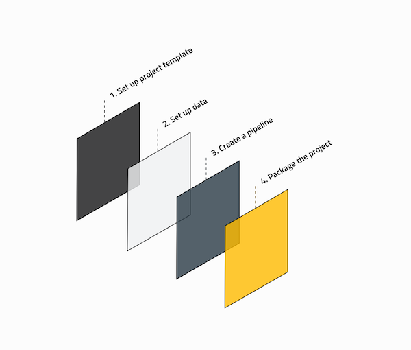

Frequently asked questions¶
The following lists a set of questions that we have been asked about Kedro in the past. If you have a different question which isn’t answered here, check out GitHub Discussions or talk to the community on the Discord Server.
What is Kedro?¶
Kedro is an open-source Python framework for creating reproducible, maintainable and modular data science code. It borrows concepts from software engineering and applies them to machine-learning code; applied concepts include modularity, separation of concerns and versioning. Kedro is hosted by the LF AI & Data Foundation.
For the source code, take a look at the Kedro repository on Github.
What are the primary advantages of Kedro?¶
If you’re a Data Scientist, then you should be interested in Kedro because it enables you to:
Write cleaner code, so that your Python code is easy to maintain and re-run in future; it does this by applying standardisation and software-engineering best practices
Make a seamless transition from development to production, as you can write quick, throw-away exploratory code and transition to maintainable, easy-to-share, code experiments quickly
Stay current in machine learning operations (MLOps), as Kedro takes care of the principles you need to create data science code that lasts; you’ll always be two steps in front of industry standards
Integrate with your data science workflow, and use tools in the data science ecosystem, like Tensorflow, SciKit-Learn or Jupyter notebooks for experimentation. You can also take advantage of tools to produce for producing quality code like Sphinx (documentation);
black,isortandflake8(code linting and formatting); and,pytest(unit tests)
If you’re a Machine-Learning Engineer or Data Engineer, then you should be interested in Kedro because:
Standardisation creates efficiency, establishing proper analytics code foundations can save up to 80% of your hours down the road when putting models in production
You can focus on solving problems, not setting up projects, Kedro provides the scaffolding to build more complex data and machine-learning pipelines. There’s a focus on spending less time on the tedious “plumbing” required to maintain analytics code; this means that you have more time to solve new problems
A data-driven framework makes pipelines easy, by permitting data versioning, incremental computing and automatic pipeline running order resolution
It is platform-agnostic, allowing you to choose what compute or platform to run your Kedro workflow; Databricks and products like Kubeflow, Argo, Prefect and Airflow are deployment targets
It is easy to extend, by using Hooks to add in tools like MLFlow (experiment tracking), Great Expectations (data validation and profiling) and Grafana (pipeline monitoring)
If you’re a Project Lead, then you should be interested in Kedro because:
It allows for effortless teamwork and an ability to scale analytics across an organisation. Kedro standardises team workflows; the modular structure of Kedro facilitates a higher level of collaboration when teams solve problems together
We stand for no more fire drills. You can remove long delays created because you have to refactor a data science proof of concept into production
You don’t need to start from scratch, standardisation and separation of concerns makes it possible to reuse analytics code
See your project like never before, Kedro’s pipeline visualization plugin lets you see a blueprint of your team’s developing workflows and better collaborate with business stakeholders
How does Kedro compare to other projects?¶
Some of our open-source users have called Kedro, the React or Django for data science code and we think it’s a suitable framing for who we are. We exist to standardise how data science code is created.
Everyone sees the pipeline abstraction in Kedro and gets excited, thinking that we’re similar to orchestrators like Airflow, Luigi, Prefect, Dagster, Flyte, Kubeflow and more. We focus on a different problem, which is the process of authoring pipelines, as opposed to running, scheduling and monitoring them.
The responsibility of “What time will this pipeline run?”, “How do I manage my compute?” and “How will I know if it failed?” is left to the orchestrators. We also have deployment guidelines for using orchestrators as deployment targets and are working in collaboration with the maintainers of some of those tools to make the deployment experience as enjoyable as possible.
What is the typical Kedro project development workflow?¶
When you build a Kedro project, you will typically follow a standard development workflow:

1. Set up the project template¶
Create a new project with
kedro newInstall project dependencies with
pip install -r src/requirements.txtConfigure the following in the
conffolder:Logging
Credentials
Any other sensitive / personal content
2. Set up the data¶
Add data to the
datafolderReference all datasets for the project in the
conf/base/catalog.ymlfile
3. Create the pipeline¶
Create the data transformation steps as Python functions
Add your functions as nodes, to construct the pipeline
Choose how to run the pipeline: sequentially or in parallel
4. Package the project¶
Build the project documentation
Package the project for distribution
What is data engineering convention?¶
Bruce Philp and Guilherme Braccialli are the brains behind a layered data-engineering convention as a model of managing data. You can find an in-depth walk through of their convention as a blog post on Medium.
Refer to the following table below for a high level guide to each layer’s purpose
Note
The data layers don’t have to exist locally in the data folder within your project, but we recommend that you structure your S3 buckets or other data stores in a similar way.

Folder in data |
Description |
|---|---|
Raw |
Initial start of the pipeline, containing the sourced data model(s) that should never be changed, it forms your single source of truth to work from. These data models are typically un-typed in most cases e.g. csv, but this will vary from case to case |
Intermediate |
Optional data model(s), which are introduced to type your :code: |
Primary |
Domain specific data model(s) containing cleansed, transformed and wrangled data from either |
Feature |
Analytics specific data model(s) containing a set of features defined against the |
Model input |
Analytics specific data model(s) containing all :code: |
Models |
Stored, serialised pre-trained machine learning models |
Model output |
Analytics specific data model(s) containing the results generated by the model based on the |
Reporting |
Reporting data model(s) that are used to combine a set of |
How do I upgrade Kedro?¶
We use Semantic Versioning. The best way to safely upgrade is to check our release notes for any notable breaking changes. Follow the steps in the migration guide included for that specific release.
Once Kedro is installed, you can check your version as follows:
kedro --version
To later upgrade Kedro to a different version, simply run:
pip install kedro -U
When migrating an existing project to a newer Kedro version, make sure you also update the project_version in your pyproject.toml file from the project root directory or, for projects generated with Kedro<0.17.0, in your ProjectContext, which is found in src/<package_name>/run.py.
How can I use a development version of Kedro?¶
Important
The development version of Kedro is not guaranteed to be bug-free and/or compatible with any of the stable versions. We do not recommend that you use a development version of Kedro in any production systems. Please install and use with caution.
If you want to try out the latest, most novel functionality of Kedro which has not been released yet, you can run the following installation command:
pip install git+https://github.com/kedro-org/kedro.git@develop
This will install Kedro from the develop branch of the GitHub repository, which is always the most up to date. This command will install Kedro from source, unlike pip install kedro which installs from PyPI.
If you want to rollback to the stable version of Kedro, execute the following in your environment:
pip uninstall kedro -y
pip install kedro
How can I find out more about Kedro?¶
There are a host of articles, podcasts, talks and Kedro showcase projects in the kedro-community repository.
Our preferred Kedro-community channel for feedback is through GitHub issues. We update the codebase regularly; you can find news about updates and features in the RELEASE.md file on the Github repository.
Who maintains Kedro?¶
Kedro was originally designed by Aris Valtazanos and Nikolaos Tsaousis at QuantumBlack to solve challenges they faced in their project work. Their work was later turned into an internal product by Peteris Erins, Ivan Danov, Nikolaos Kaltsas, Meisam Emamjome and Nikolaos Tsaousis. In the project’s latest iteration it is an incubating project within LF AI & Data.
Currently, the core Kedro team consists of Ahdra Merali, Andrew Mackay, Ankita Katiyar, Antony Milne, Cvetanka Nechevska, Deepyaman Datta, Gabriel Comym, Huong Nguyen, Ivan Danov, Jannic Holzer, Jo Stichbury, Joel Schwarzmann, Lim Hoang, Merel Theisen, Nero Okwa, Nok Lam Chan, Rashida Kanchwala, Sajid Alam, Tynan DeBold and Yetunde Dada.
Former core team members with significant contributions include: Andrii Ivaniuk, Anton Kirilenko, Dmitrii Deriabin, Gordon Wrigley, Hamza Oza, Ignacio Paricio, Jiri Klein, Kiyohito Kunii, Laís Carvalho, Liam Brummitt, Lorena Bălan, Nasef Khan, Richard Westenra, Susanna Wong and Zain Patel.
And last, but not least, all the open-source contributors whose work went into all Kedro releases.
How can I cite Kedro?¶
If you’re an academic, Kedro can also help you, for example, as a tool to solve the problem of reproducible research. Use the “Cite this repository” button on our repository to generate a citation from the CITATION.cff file.
Can I create a virtual environment without conda?¶
You can use venv or pipenv instead.
venv (instead of conda)¶
If you use Python 3, you should already have the venv module installed with the standard library. Create a directory for working with Kedro within your virtual environment:
mkdir kedro-environment && cd kedro-environment
This will create a kedro-environment directory in your current working directory. Next, to create a new virtual environment in this directory, run:
python -m venv env/kedro-environment # macOS / Linux
python -m venv env\kedro-environment # Windows
Activate this virtual environment:
source env/kedro-environment/bin/activate # macOS / Linux
.\env\kedro-environment\Scripts\activate # Windows
To exit the environment:
deactivate
pipenv (instead of conda)¶
Install pipenv as follows:
pip install pipenv
Create a directory for the virtual environment and change to that directory:
mkdir kedro-environment && cd kedro-environment
Once all the dependencies are installed, to start a session with the correct virtual environment activated:
pipenv shell
To exit the shell session:
exit
How can I get my question answered?¶
If your question isn’t answered above, talk to the community on the Kedro Slack channels.